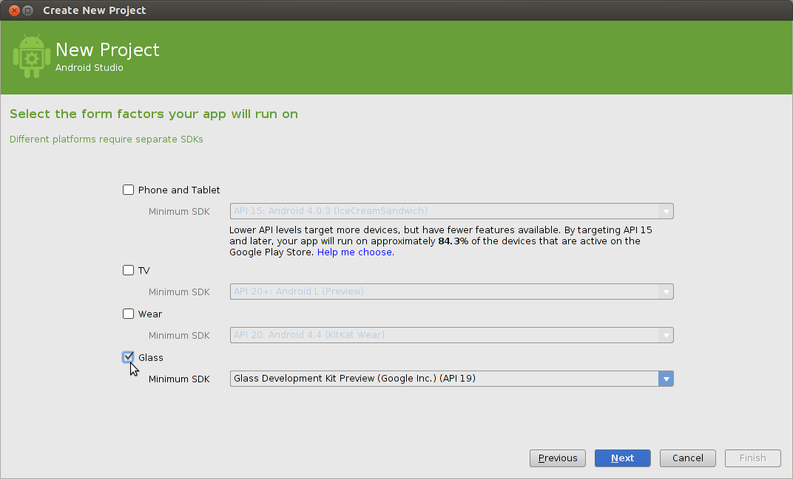
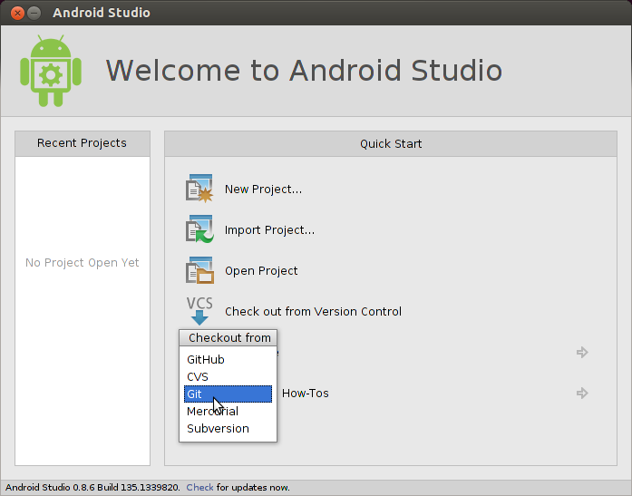

GDK Quick Start
Before you begin to use the GDK, you need intermediate or better knowledge in Android development.
This quick start gets your environment set up with the GDK and shows you how to install your first piece of Glassware. Check out the pattern guides for detailed information on how to build Glassware.
For Android experts
If you’re comfortable with Android, here’s all you need to know:
- Get the Android 4.4.2 (API 19) SDK and Glass Development Kit Preview add-on from the Android SDK Manager.
- On Glass, turn on USB debugging (Settings > Device Info > Turn on debug).
- Import some GDK samples.
- When you’re ready to create a project for your own Glassware, use these settings:
- Compile with: Glass Development Kit Developer Preview
- Theme: None (ADT and Android Studio usually assign a theme automatically, even if you specify no theme, so remove the
android:theme property from your manifest after creating a project.)
- Head on over to the pattern guides and developer guides for more learning.

For Android beginners
We recommend starting with the Building Your First App training class at the Android developers site and then building a few simple Android apps before building GDK Glassware.
Setting up the development environment
- We recommend installing Android Studio for easier development. The rest of these steps assume you have this installed.
- Click Configure > SDK Manager.
- Install the SDK Platform and Glass Development Kit Preview for Android 4.4.2 (API 19). Everything else is optional.
- On Glass, go to Settings > Device Info > Turn on debug to enable
adb, which allows your development system to communicate with Glass.
- Connect Glass to your development system and tap on the touchpad to authorize debug access.
Importing samples
To help get you started, GDK sample projects are available on our GitHub [TODO: Switch link] repository:
- ApiDemo [TODO: SWITCH LINK]: Gallery of some GDK APIs usage.
- Compass: Simple compass using a
LiveCard.
- Stopwatch [TODO: SWITCH LINK]: Simple stopwatch using a
LiveCard.
- Timer: Simple timer using a combination of
Immersion and LiveCard.
To import one of the samples into Android Studio:
- Click Check out from Version Control > Git.

- Use one of the samples’ clone URL in the Vcs Repository URL field (example:
https://github.com/googleglass/gdk-apidemo-sample.git) [TODO: SWITCH LINK].
- Click OK on the following two screens.
- Build the project and run it on your connected Glass by clicking on the Play button. Make sure to check the sample’s
README for invocation details.
Portions of this page are reproduced from work created and shared by Google and used according to terms described in the Creative Commons 4.0 Attribution License.